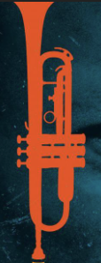

Reseña
La leyenda de la trompeta Miles Davis es uno de los músicos mas importantes en la historia de la música, su innovación y talento lo convierten en una de las figuras mas influyentes en la historia del Jazz.
Los discos mas importantes de Miles Davis son:
- King of Blue (1959)
- Sketches of Spain (1960)
- Porgy and Bess (1959)
- Your're Under Arrest (1985)
- Bitches Brew (1970)
- In a Silent Way (1969)
- Birth of the Cool (1957)